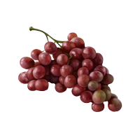

 Mudbrick winery posesses perhaps one of the most insirping landscapes in which to taste, sample, and enjoy the wines that are created here on Waiheke Island. Visit us and melt into the entire experience with our amazing resturant meals and view that is to die for.
MENUS
Here at Mudbrick we have a number of menus to chose from suited to each season. We guarantee that you'll find something that suits your taste palate.
ACCOMMODATION
Mudbrick offers a number of unique accomodation options scattered around Waiheke island. If you're after a short walk to town or somewhere more remote, we can post you up in a luxury bach style home.
The Owners Retreat – Private Beach Priced from $400 a night. A 35 minute drive from Mudbrick/Matiatia Wharf, the Owners Retreat is the ultimate getaway spot with its own beach and spa pool.
The Edge – Amazing Modern Beach House Minimum stay of 7 nights. Accommodates 8 guests. Only 2 minute drive from Mudbrick & Matiatia Wharf.